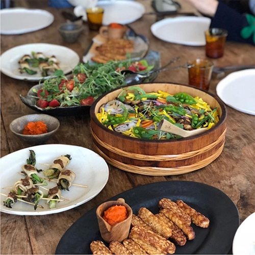

뿌리온더플레이트
안국역 근처 골목의 정취를 느낄수 있는 비건 디저트
식당 입니다. 현미로 만든 케이크들이 이 가게의 대표
시그니처 메뉴입니다. 자연식 요리 연구 부부가 오랜시간
운영해 온 공간, 뿌리온더플레이트.
골목을 돌면 나오는 이곳은 ‘좋은 재료’에 가치를 두고
농산물을 가급적 정제하지 않는 방식으로 조리하며, 동물성 식재료를 사용하지 않는 것을 원칙으로 운영되고 있는 가게입니다. 이 가게만의 특별한 곡물 커피와 현미로 만든
플레인 케이크를 곁들여보자. 특히, 원두가 아닌 곡물을
볶은 커피의 매력은 상상 그 이상이다.
*매달 쿠킹 클래스가 운영된다. 비건에 관심있는 분 신청 Go!
